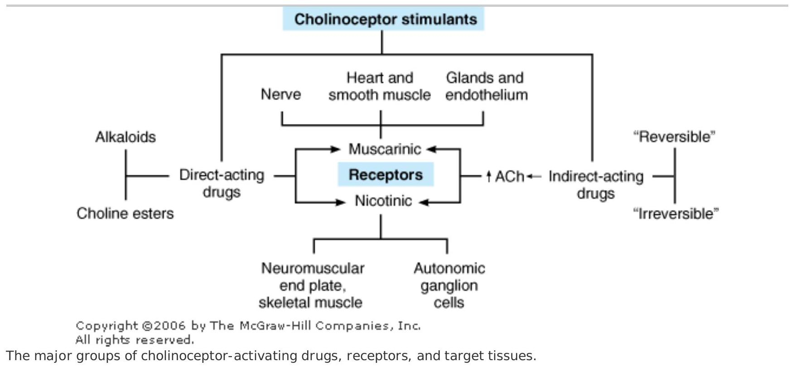

CHOLI NOCEPTOR-ACTI VATI NG & CHOLI NESTERASE-I NHI BITI NG DRUGS
Acetylcholine receptor stimulants and cholinesterase inhibitors together comprise a large group of drugs that mimic acetylcholine (cholinomimetic agents) (Figure 7-1). Cholinoceptor stimulants are classified pharmacologically by their spectrum of action depending on the type of receptor—muscarinic or nicotinic—that is activated. They are also classified by their mechanism of action because some cholinomimetic drugs bind directly to (and activate) cholinoceptors while others act indirectly by inhibiting the hydrolysis of endogenous acetylcholine.
